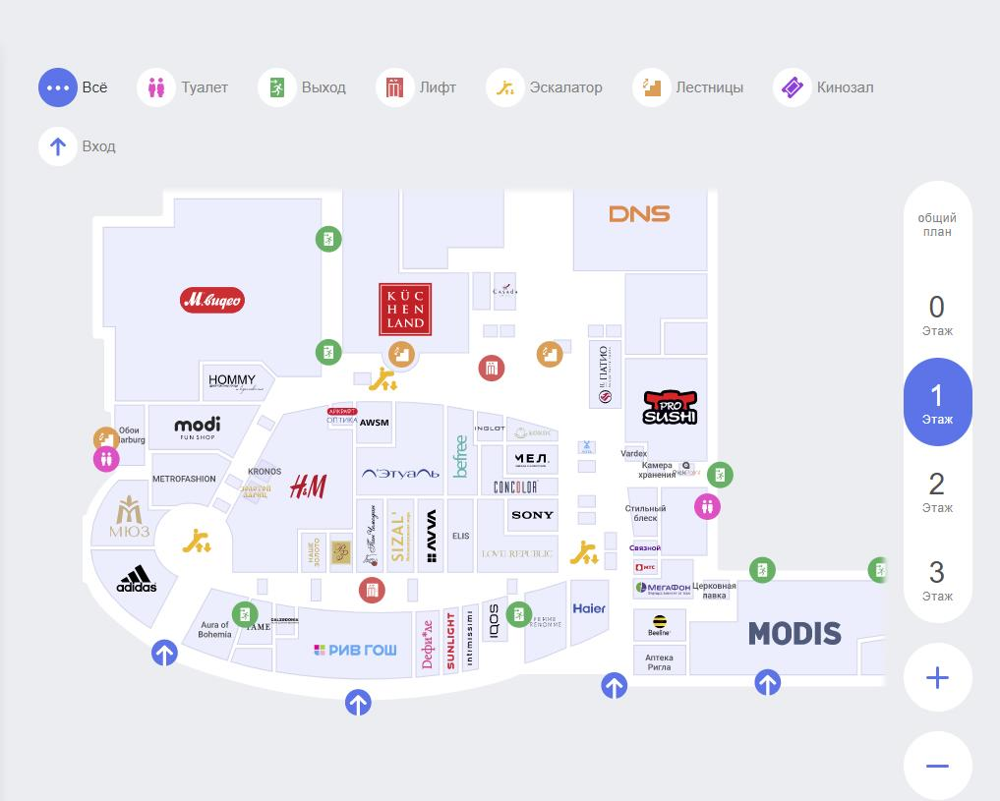
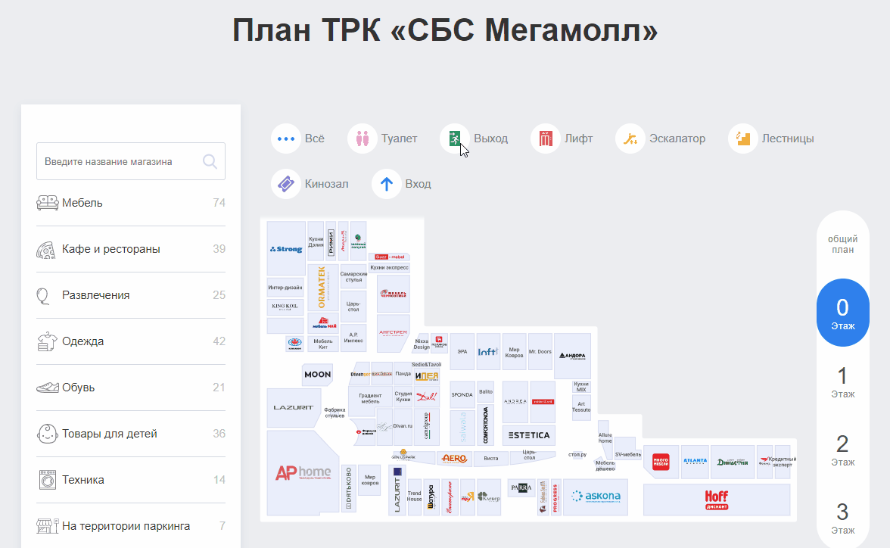
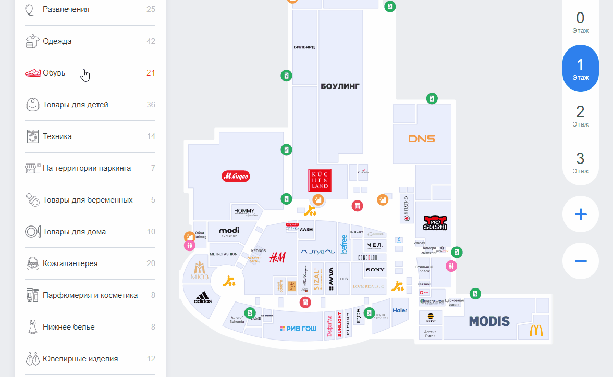
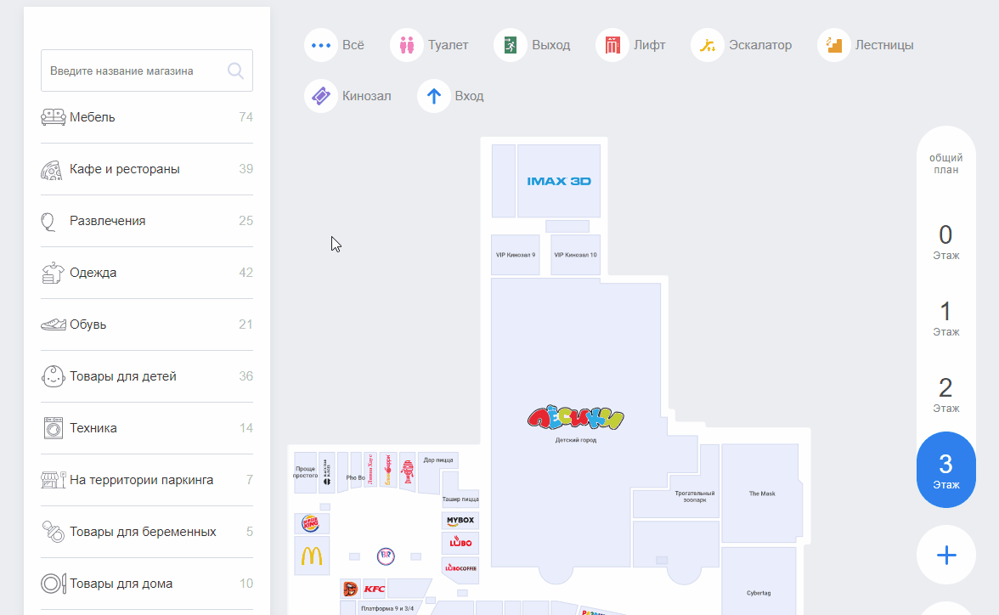
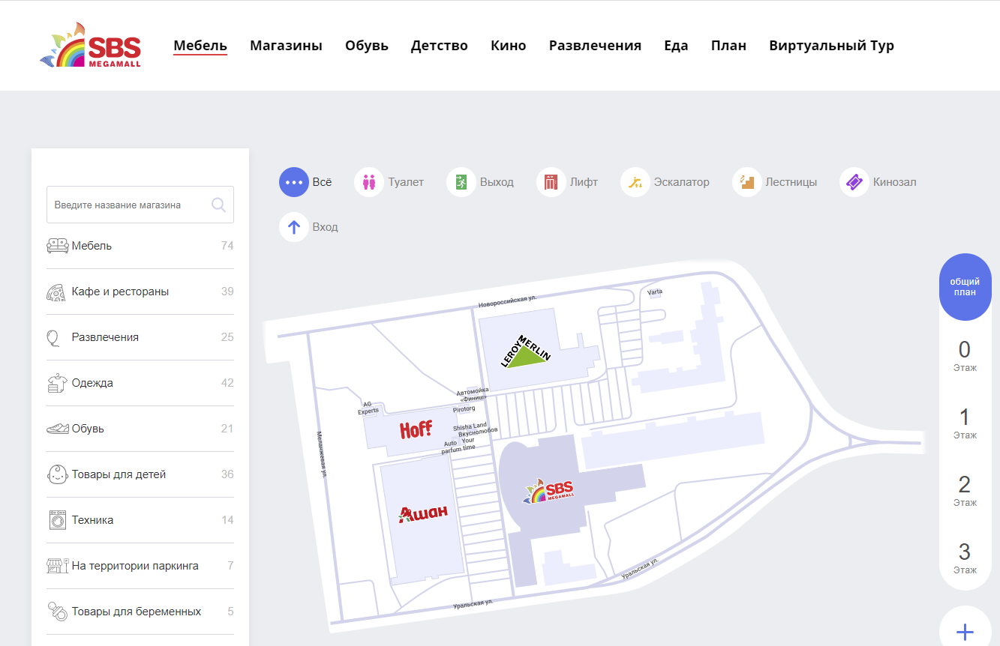

О проекте
Клиент
ТРК «СБС Мегамолл» — один из крупнейших торгово-развлекательных комплексов Краснодара с IMAX, Leroy Merlin, Hoff и ещё более 300 мировых брендов одежды, обуви и других товаров. Чтобы узнать больше, жителей других городов приглашаем на https://sbsmegamall.ru. Краснодарцам же привет из субботнего Ашана в «СБС Мегамолл».
Проблема
Предыдущую версию карты мы разработали для СБС в 2018 году. Тогда мы решали несколько задач: сделать карту на сайте и интерактивный план для терминалов в торговом центре.
За полтора года накопился некоторый пользовательский опыт, да и мы стали немного умнее, и рассмотрели план ТРК на сайте в разрезе задач, которые они решают для пользователя, той «работы», на которую пользователь карту «нанимает».
У терминала в торговом центре всё просто: нужно помочь найти магазин, туалет или лифт, и показать путь от устройства до объекта поиска.
Сайтом человек будет в основном пользоваться вне торгового центра, и поэтому набор задач не такой очевидный.
Задачи
Зачем пользователь открывает план торгового центра на сайте?
-
спланировать поездку в «СБС Мегамолл», он желает посетить конкретные магазины, или ищет одну или несколько категорий товаров, например, продукты, верхнюю одежду, мебель, и т.д.
-
смотрит и запоминает, как пройти от входа до нужного ему места.
-
хочет узнать время работы и телефон магазина, боулинга, развлекательного центра, кино или кафе/ресторана.
-
узнать как заехать на территорию на автомобиле, где припарковаться.
-
просто смотрит, какие магазины и развлечения есть в ТРЦ.
Собственно, все эти задачи мы помогаем выполнять с помощью нового интерактивного плана.
Будем полезны
Всем, кто использует карту, чтобы посмотреть, запомнить и потом найти, нужно помочь не подходить к терминалу, и дать не только схему, но и верные ориентиры.
Первый ориентир — это вход. Поворачиваем карту так, чтобы вход был внизу, именно так мы видим торговый центр при входе.
Лифты, эскалаторы, туалеты нужны обязательно.
На карте желательно разместить максимальное количество логотипов, особенно известных брендов. Идём в «М Видео»: вход слева, прямо мимо H&M, сразу после Hommy. Весьма легко запомнить даже на уровне подсознания.

Тем, кто «просто посмотреть», выводим количество торговых точек в каждой категории, позволяем выключить любые иконки, чтобы не мешали исследовать карту.
Для тех, кто хочет купить что-то из определённой категории, есть список категорий с подсветкой выбранной на всех этажах.


Поиск старается для всех: ищет и по категории, и по названию арендатора.
При выборе конкретного бренда (в списке или на карте) над ним появляется логотип арендатора, телефоны и режим работы. Можно перейти на страницу арендатора в новой вкладке, чтобы не потерять вкладку с сайтом, если это не тот магазин.

У ТРК «СБС Мегамолл» обширная территория, большая парковка и несколько строений. Сделали общий план с указанием улиц и ближайших перекрестков: он полезен для водителей, и показывает торговые точки снаружи.

Разработка
Перенесли в Figma план этажей, стилизовали его, сделали интерфейс, сверстали и адаптировали страницу под мобильные устройства.
Использовали VueJS, чтобы менять контент на странице быстро и без перезагрузки.
Сайт на Битриксе, там сделали управление логотипами и ссылкой на страницу арендатора на каждом участке карты.
Результат
Интерактивный план торгово-развлекательного комплекса, который помогает хорошо подготовиться к шопингу, ознакомиться с разнообразием представленных брендов, и получить максимум удовольствия от посещения «СБС Мегамолл».